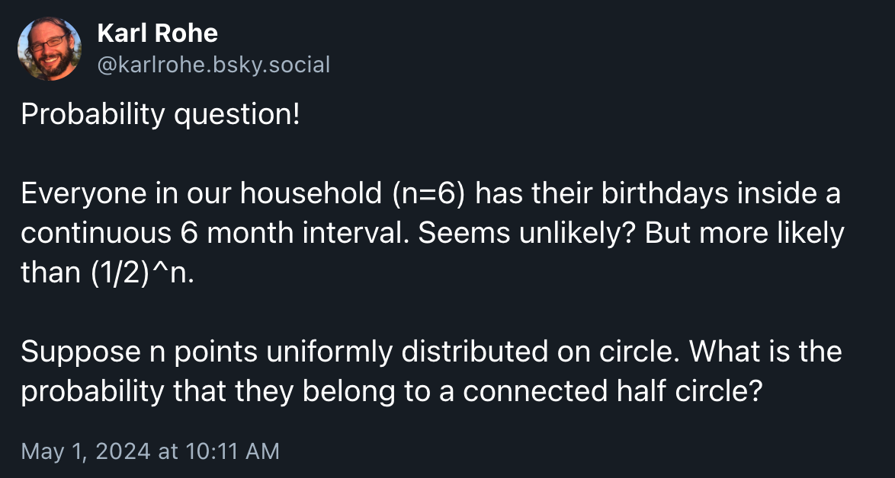
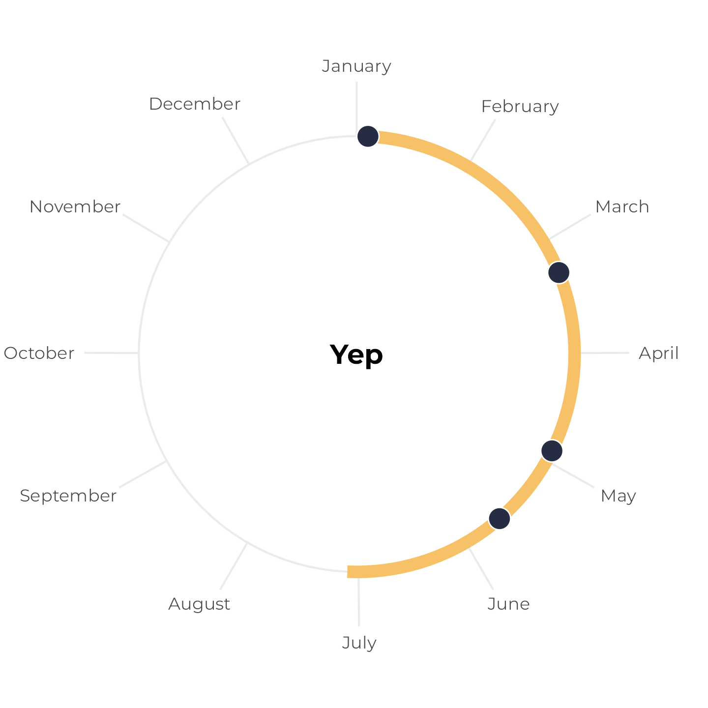
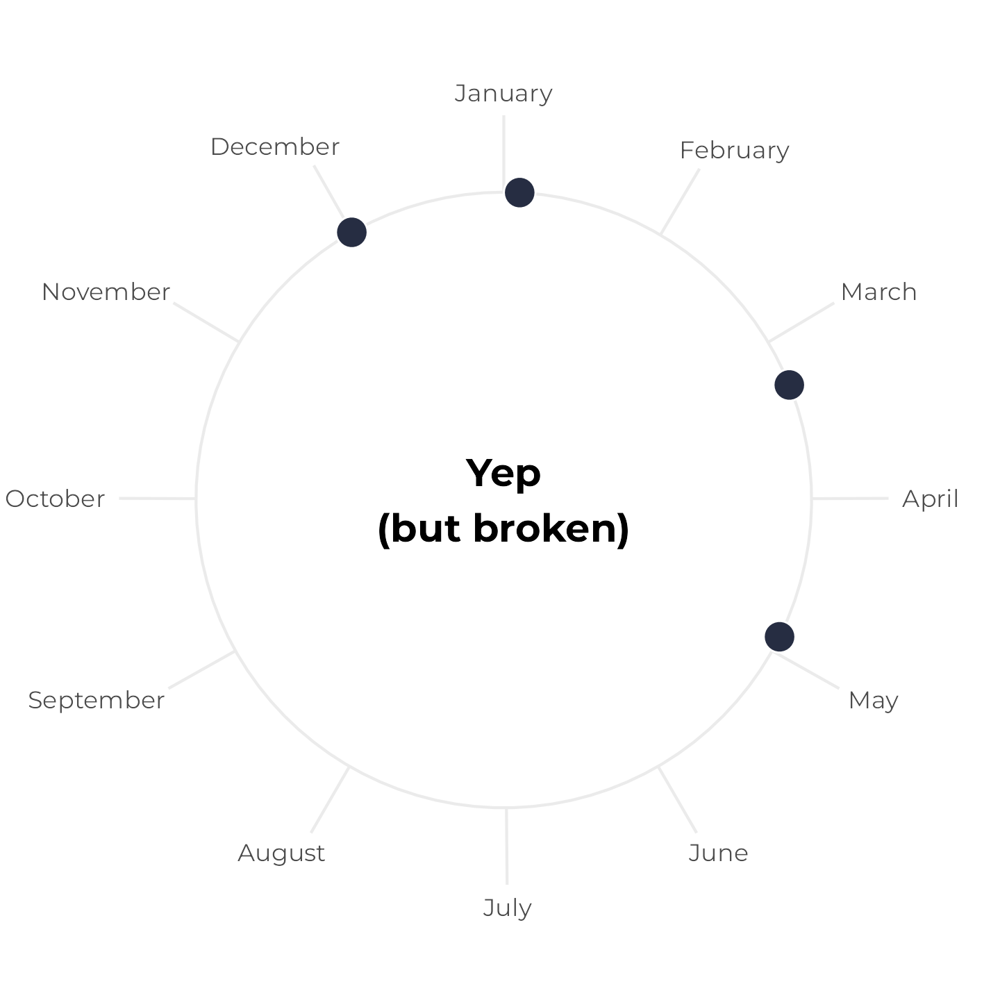
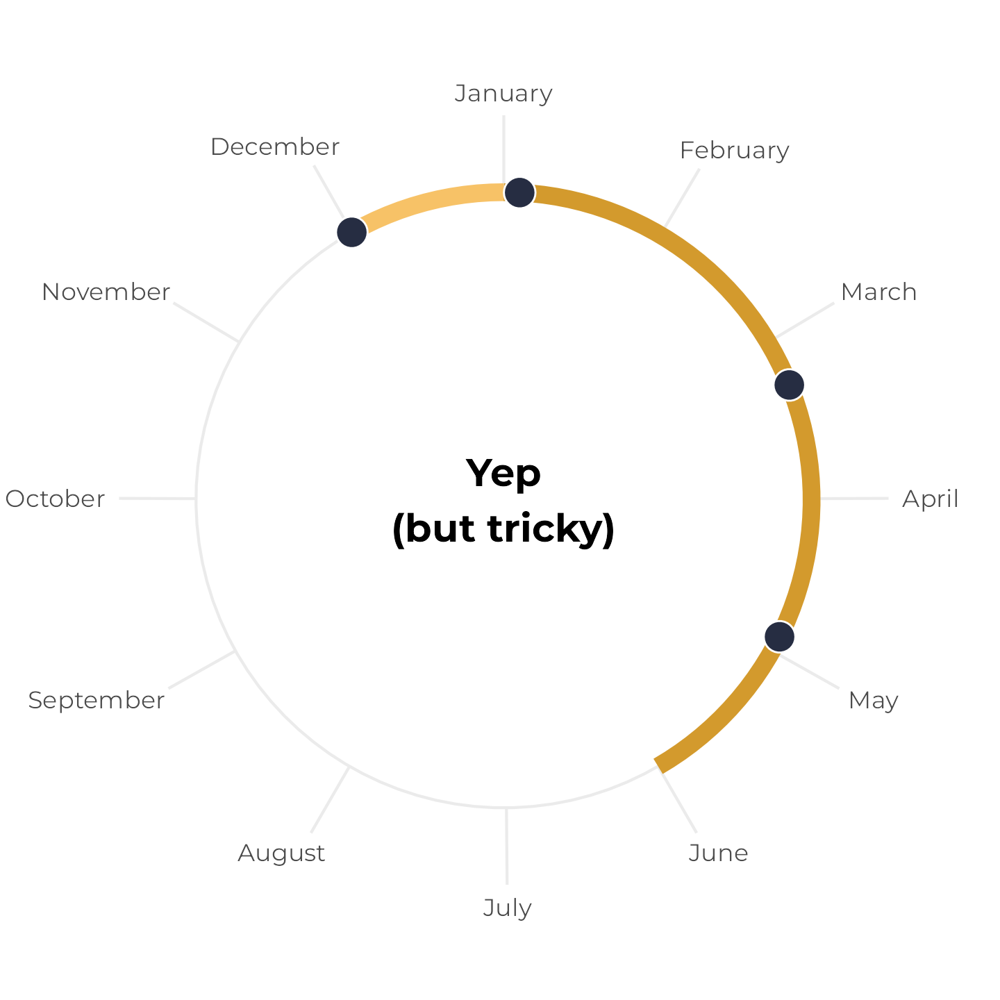
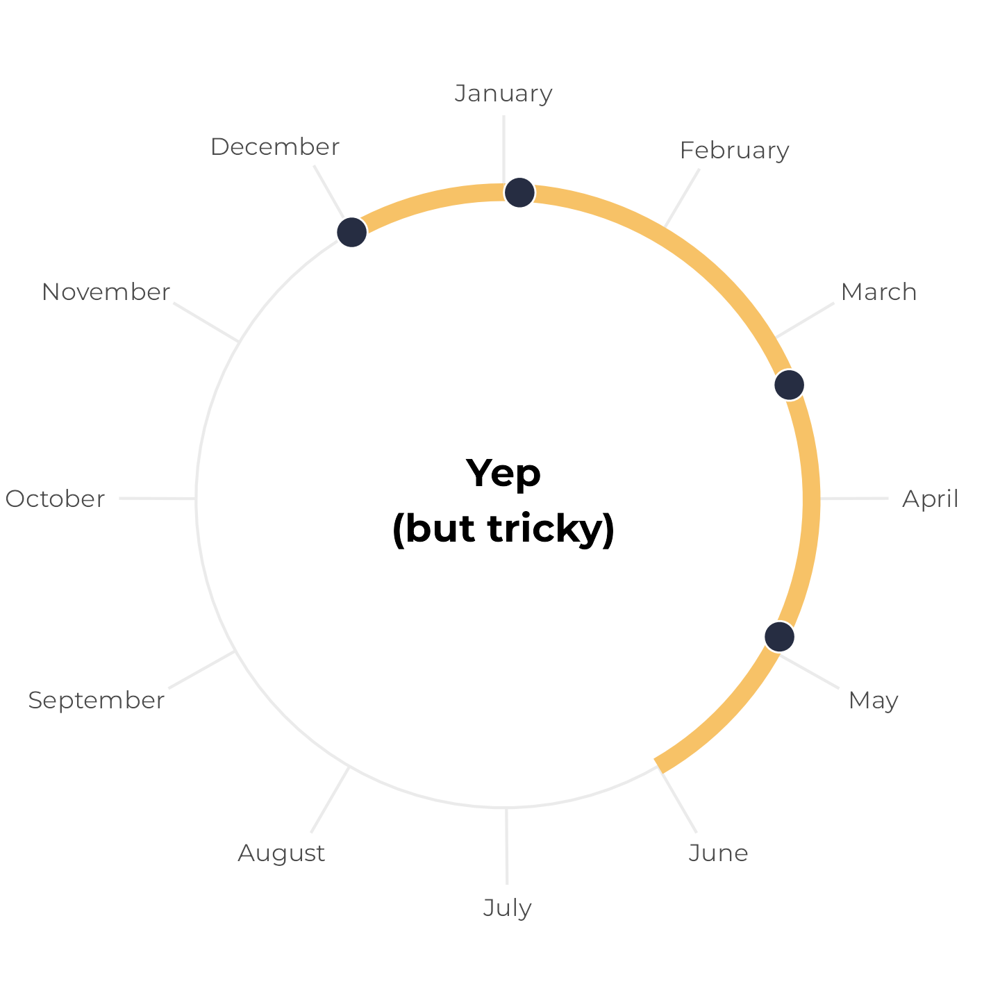
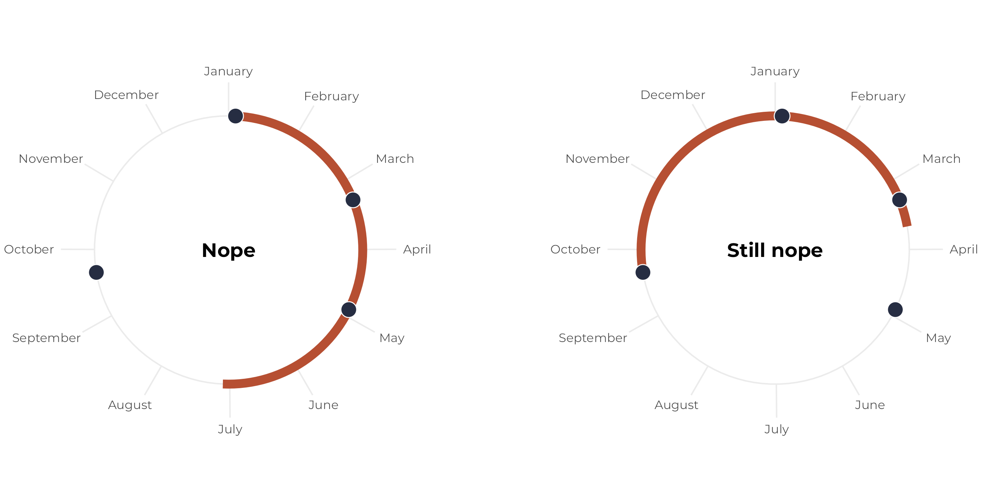
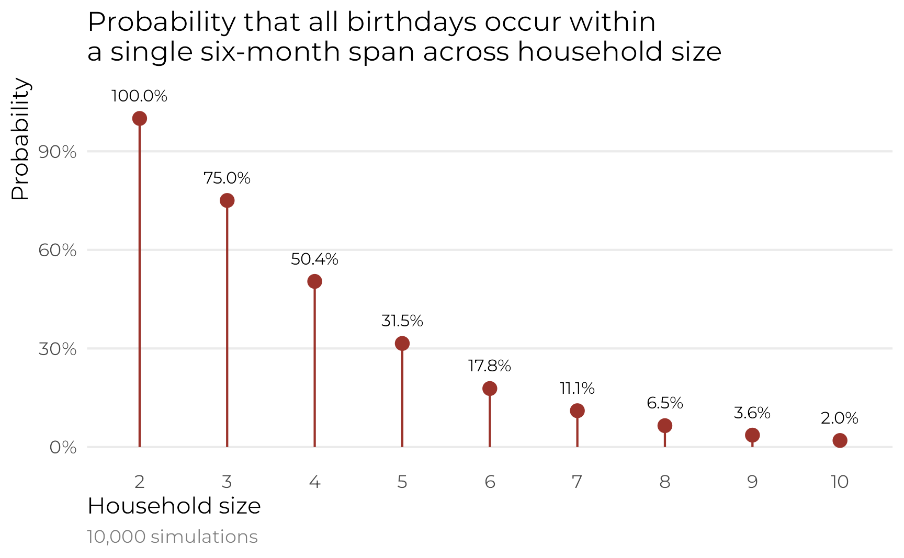
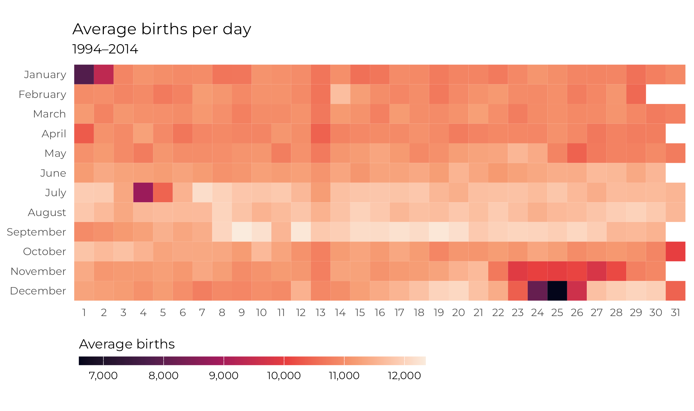
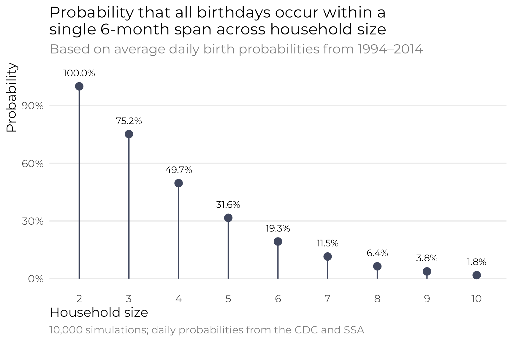

![]()
choose(40, 5)
## [1] 658008Even though I’ve been teaching R and statistical programming since 2017, and despite the fact that I do all sorts of heavily quantitative research, I’m really really bad at probability math.
Like super bad.
The last time I truly had to do set theory and probability math was in my first PhD-level stats class in 2012. The professor cancelled classes after the first month and gave us all of October to re-teach ourselves calculus and probability theory (thank you Sal Khan), and then the rest of the class was pretty much all about pure set theory stuff. It was… not fun.
But I learned a valuable secret power from the class. During the final couple weeks of the course, the professor mentioned in passing that it’s possible to skip most of this probability math and instead use simulations to get the same answers. That one throwaway comment changed my whole approach to doing anything based on probabilities.
Why simulate?
In one problem set from November 20121, we had to answer this question using both actual probability math and R simulation:
1 I wrote this in a .Rnw file! R Markdown wasn’t even a thing yet!
An urn contains 10 red balls, 10 blue balls, and 20 green balls. If 5 balls are selected at random without replacement, what is the probability that at least 1 ball of each color will be selected?
ew probability math
We can find this probability by finding the probability of not selecting one or more of the colors in the draw and subtracting it from 1. We need to find the probability of selecting no red balls, no blue balls, and no green balls, and then subtract the probability of the overlapping situations (i.e. no red or blue balls, no red or green balls, and no blue or green balls).
To do this, we can use n-choose-k notation from combinatorics to represent the number of choices from a pool of possible combinations. This notation looks like this:
\[ \dbinom{n}{k} = \frac{n!}{k! (n-k)!} \]
If we’re selecting 5 balls from a pool of 40, we can say “40 choose 5”, or \(\binom{40}{5}\). To calculate that, we get this gross mess:
\[ \begin{aligned} \dbinom{40}{5} &= \frac{40!}{5! (40-5)!} \\[10pt] &= \frac{40!}{5!\ 35!} \\[10pt] &= \frac{40 \times 39 \times 38 \times 37 \times 36}{5!} \qquad \text{(cancel out the 35!)} \\[10pt] &= \frac{78,960,960}{120} \\[10pt] &= 658,008 \end{aligned} \]
Or we can do it with R:
So with this binomial choose notation, we can calculate the official formal probability of drawing at least one red, blue, and green ball from this urn:
\[ \begin{aligned} \text{Pr}(\text{at least one red, blue, and green}) &= 1 - \frac{\text{Ways to get no red or no blue or no green}}{\text{Ways to get 5 balls from 40}} \\[10pt] &= 1 - \dfrac{ \begin{array}{@{}c@{}} (\text{Ways to get no red}) + (\text{Ways to get no blue}) + (\text{Ways to get no green}) - \\ (\text{Ways to get no red or blue}) - (\text{Ways to get no red or green}) - (\text{Ways to get no blue or green}) \end{array} }{\text{Ways to get 5 balls from 40}} \\[10pt] &= 1 - \dfrac{ \dbinom{30}{5} + \dbinom{30}{5} + \dbinom{20}{5} - \dbinom{20}{5} - \dbinom{10}{5} - \dbinom{10}{5} }{ \dbinom{40}{5} } \end{aligned} \]
If we really really wanted, we could then calculate all of that by hand, but ew.
We can just use R instead:
# Ways to draw 5 balls without getting a specific color
no_red <- choose(30, 5)
no_blue <- choose(30, 5)
no_green <- choose(20, 5)
# Ways to draw 5 balls without getting two specific colors
no_red_blue <- choose(20, 5)
no_red_green <- choose(10, 5)
no_blue_green <- choose(10, 5)
# Ways to draw 5 balls in general
total_ways <- choose(40, 5)
# Probability of drawing at least 1 of each color
prob_real <- 1 - (no_red + no_blue + no_green - no_red_blue - no_red_green - no_blue_green) / total_ways
prob_real
## [1] 0.5676Great. There’s a 56.76% chance of drawing at least one of each color. We have an answer, but this was really hard, and I could only do it because I dug up my old problem sets from 2012.
yay brute force simulation
I really don’t like formal probability math. Fortunately there’s a way I find a heck of a lot easier to use. Brute force simulation.
Instead of figuring out all these weird n-choose-k probabilities, we’ll use the power of computers to literally draw from a hypothetical urn over and over and over again until we come to the right answer.
Here’s one way to do it:2
2 Again, this is 2012-era R code; nowadays I’d forgo the loop and use something like purrr::map() or sapply().
# Make this randomness consistent
set.seed(12345)
# Make an urn with balls in it
urn <- c(rep('red', 10), rep('blue', 10), rep('green', 20))
# How many times we'll draw from the urn
simulations <- 100000
count <- 0
for (i in 1:simulations) {
# Pick 5 balls from the urn
draw <- sample(urn, 5)
# See if there's a red, blue, and green; if so, record it
if ('red' %in% draw && 'blue' %in% draw && 'green' %in% draw) {
count <- count + 1
}
}
# Find the simulated probability
prob_simulated <- count / simulations
prob_simulated
## [1] 0.5681Sweet. The simulation spat out 0.5681, which is shockingly close to 0.5676. If we boosted the number of simulations from 100,000 to something even higher,3 we’d eventually converge on the true answer.
3 Going up to 2,000,000 got me to 0.5676.
I use this simulation-based approach to anything mathy as much as I can. Personally, I find it far more intuitive to re-create the data generating process rather than think in set theory and combinatorics. In my program evaluation class, we do an in-class activity with the dice game Zilch where we figure out the probability of scoring something in a given dice roll. Instead of finding real probabilities, we just simulate thousands of dice rolls and mark if something was rolled. We essentially recreate the exact data generating process.
This approach is also the core of modern Bayesian statistics. Calculating complex integrals to find posterior distributions is too hard, so we can use Markov Chain Monte Carlo (MCMC) processes bounce around the plausible space for a posterior distribution until they settle on a stable value.
Birthday probabilities
A couple days ago, I came across this post on Bluesky:

This is neat because it’s also the case in my household. We have “birthday season” from May to November, and have a dearth of birthdays from November to May. They’re all clustered in half the year. I’d never thought about how unlikely that was.

There’s probably some formal probability math that can answer Karl’s question precisely, but that’s hard. So instead, I decided to figure this out with my old friend—brute force simulation.
The data generating process is a little more complicated than just drawing balls from urns, and the cyclical nature of calendars adds an extra wrinkle to simulating everything, but it’s doable (and fun!), so I figured I’d share the details of the simulation process here. And with the recent release of {ggplot2} 3.5 and its new coord_radial() and legend placement settings and point-based text sizing and absolute plot-based positioning, I figured I’d make some pretty plots along the way.
Let’s load some libraries, make a custom theme, and get started!
library(tidyverse)
library(ggtext)
library(patchwork)
clrs <- MetBrewer::met.brewer("Demuth")
# Custom ggplot theme to make pretty plots
# Get the font at https://fonts.google.com/specimen/Montserrat
theme_calendar <- function() {
theme_minimal(base_family = "Montserrat") +
theme(
axis.text.y = element_blank(),
axis.title = element_blank(),
panel.grid.minor = element_blank(),
plot.title = element_text(face = "bold", hjust = 0.5),
plot.subtitle = element_text(hjust = 0.5)
)
}
update_geom_defaults("text", list(family = "Montserrat"))Visualizing birthday distributions and spans
All birthdays within 6-month span
First, let’s work with a hypothetical household with four people in it with birthdays on January 4, March 10, April 28, and May 21. We’ll plot these on a radial plot and add a 6-month span starting at the first birthday:
# All these happen within a 6-month span
birthdays_yes <- c(
ymd("2024-01-04"),
ymd("2024-03-10"),
ymd("2024-04-28"),
ymd("2024-05-21")
)
tibble(x = birthdays_yes) |>
ggplot(aes(x = x, y = "")) +
annotate(
geom = "segment",
x = birthdays_yes[1], xend = birthdays_yes[1] + months(6), y = "",
linewidth = 3, color = clrs[5]) +
geom_point(size = 5, fill = clrs[10], color = "white", pch = 21) +
annotate(
"text",
label = "Yep", fontface = "bold",
x = I(0.5), y = I(0),
size = 14, size.unit = "pt"
) +
scale_x_date(
date_breaks = "1 month", date_labels = "%B",
limits = c(ymd("2024-01-01"), ymd("2024-12-31")),
expand = expansion(0, 0)
) +
scale_y_discrete(expand = expansion(add = c(0, 1))) +
coord_radial(inner.radius = 0.8) +
theme_calendar()
The four birthdays all fit comfortably within the 6-month span. Neat.
All birthdays within 6-month span, but tricky
Next, let’s change the May birthday to December 1. These four birthdays still all fit within a 6-month span, but it’s trickier to see because the calendar year resets in the middle. Earlier, we plotted the yellow span with annotate(), but if we do that now, it breaks and we get a warning. We can’t draw a line segment from December 1 to six months later:
birthdays_yes_but_tricky <- c(
ymd("2024-01-04"),
ymd("2024-03-10"),
ymd("2024-04-28"),
ymd("2024-12-01")
)
tibble(x = birthdays_yes_but_tricky) |>
ggplot(aes(x = x, y = "")) +
annotate(
geom = "segment",
x = birthdays_yes_but_tricky[4],
xend = birthdays_yes_but_tricky[4] + months(6),
y = "",
linewidth = 3, color = clrs[5]) +
geom_point(size = 5, fill = clrs[10], color = "white", pch = 21) +
annotate(
"text",
label = "Yep\n(but broken)", fontface = "bold",
x = I(0.5), y = I(0),
size = 14, size.unit = "pt"
) +
scale_x_date(
date_breaks = "1 month", date_labels = "%B",
limits = c(ymd("2024-01-01"), ymd("2024-12-31")),
expand = expansion(0, 0)
) +
scale_y_discrete(expand = expansion(add = c(0, 1))) +
coord_radial(inner.radius = 0.8) +
theme_calendar()
## Warning: Removed 1 row containing missing values or values outside the scale range (`geom_segment()`).
Instead, we can draw two line segments—one from December 1 to December 31, and one from January 1 to whatever six months from December 1 is. Since this plot represents all of 2024, we’ll force the continued time after January 1 to also be in 2024 (even though it’s technically 2025). Here I colored the segments a little differently to highlight the fact that they’re two separate lines:
tibble(x = birthdays_yes_but_tricky) |>
ggplot(aes(x = x, y = "")) +
annotate(
geom = "segment",
x = birthdays_yes_but_tricky[4],
xend = ymd("2024-12-31"),
y = "",
linewidth = 3, color = clrs[5]) +
annotate(
geom = "segment",
x = ymd("2024-01-01"),
xend = (ymd("2024-01-01") + months(6)) -
(ymd("2024-12-31") - birthdays_yes_but_tricky[4]),
y = "",
linewidth = 3, color = clrs[4]) +
geom_point(size = 5, fill = clrs[10], color = "white", pch = 21) +
annotate(
"text",
label = "Yep\n(but tricky)", fontface = "bold",
x = I(0.5), y = I(0),
size = 14, size.unit = "pt"
) +
scale_x_date(
date_breaks = "1 month", date_labels = "%B",
limits = c(ymd("2024-01-01"), ymd("2024-12-31")),
expand = expansion(0, 0)
) +
scale_y_discrete(expand = expansion(add = c(0, 1))) +
coord_radial(inner.radius = 0.8) +
theme_calendar()
Writing two separate annotate() layers feels repetitive, though, and it’s easy to make mistakes. So instead, we can make a little helper function that will create a data frame with the start and end date of a six-month span. If the span crosses December 31, it returns two spans; if not, it returns one span:
calc_date_arc <- function(start_date) {
days_till_end <- ymd("2024-12-31") - start_date
if (days_till_end >= months(6)) {
x <- start_date
xend <- start_date + months(6)
} else {
x <- c(start_date, ymd("2024-01-01"))
xend <- c(
start_date + days_till_end,
(ymd("2024-01-01") + months(6)) - days_till_end
)
}
return(tibble(x = x, xend = xend))
}Let’s make sure it works. Six months from March 15 is September 15, which doesn’t cross into a new year, so we get just one start and end date:
calc_date_arc(ymd("2024-03-15"))
## # A tibble: 1 × 2
## x xend
## <date> <date>
## 1 2024-03-15 2024-09-15Six months from November 15 is sometime in May, which means we do cross into a new year. We thus get two spans: (1) a segment from November to the end of December, and (2) a segment from January to May:
calc_date_arc(ymd("2024-11-15"))
## # A tibble: 2 × 2
## x xend
## <date> <date>
## 1 2024-11-15 2024-12-31
## 2 2024-01-01 2024-05-16Plotting with this function is a lot easier, since it returns a data frame. We don’t need to worry about using annotate() anymore and can instead map the x and xend aesthetics from the data to the plot:
tibble(x = birthdays_yes_but_tricky) |>
ggplot(aes(x = x, y = "")) +
geom_segment(
data = calc_date_arc(birthdays_yes_but_tricky[4]), aes(xend = xend),
linewidth = 3, color = clrs[5]
) +
geom_point(size = 5, fill = clrs[10], color = "white", pch = 21) +
annotate(
"text",
label = "Yep\n(but tricky)", fontface = "bold",
x = I(0.5), y = I(0),
size = 14, size.unit = "pt"
) +
scale_x_date(
date_breaks = "1 month", date_labels = "%B",
limits = c(ymd("2024-01-01"), ymd("2024-12-31")),
expand = expansion(0, 0)
) +
scale_y_discrete(expand = expansion(add = c(0, 1))) +
coord_radial(inner.radius = 0.8) +
theme_calendar()
Some birthdays outside a 6-month span
Let’s change the set of birthdays again so that one of them falls outside the six-month window. Regardless of where we start the span, we can’t collect all the points within a continuous six-month period:
birthdays_no <- c(
ymd("2024-01-04"),
ymd("2024-03-10"),
ymd("2024-04-28"),
ymd("2024-09-21")
)
p1 <- tibble(x = birthdays_no) |>
ggplot(aes(x = x, y = "")) +
geom_segment(
data = calc_date_arc(birthdays_no[1]), aes(xend = xend),
linewidth = 3, color = clrs[3]
) +
geom_point(size = 5, fill = clrs[10], color = "white", pch = 21) +
annotate(
"text",
label = "Nope", fontface = "bold",
x = I(0.5), y = I(0),
size = 14, size.unit = "pt"
) +
scale_x_date(
date_breaks = "1 month", date_labels = "%B",
limits = c(ymd("2024-01-01"), ymd("2024-12-31")),
expand = expansion(0, 0)
) +
scale_y_discrete(expand = expansion(add = c(0, 1))) +
coord_radial(inner.radius = 0.8) +
theme_calendar()
p2 <- tibble(x = birthdays_no) |>
ggplot(aes(x = x, y = "")) +
geom_segment(
data = calc_date_arc(birthdays_no[4]), aes(xend = xend),
linewidth = 3, color = clrs[3]
) +
geom_point(size = 5, fill = clrs[10], color = "white", pch = 21) +
annotate(
"text",
label = "Still nope", fontface = "bold",
x = I(0.5), y = I(0),
size = 14, size.unit = "pt"
) +
scale_x_date(
date_breaks = "1 month", date_labels = "%B",
limits = c(ymd("2024-01-01"), ymd("2024-12-31")),
expand = expansion(0, 0)
) +
scale_y_discrete(expand = expansion(add = c(0, 1))) +
coord_radial(inner.radius = 0.8) +
theme_calendar()
(p1 | plot_spacer() | p2) +
plot_layout(widths = c(0.45, 0.1, 0.45))
Simulation time!
So far, we’ve been working with a hypothetical household of 4, with arbitrarily chosen birthdays. For the simulation, we’ll need to work with randomly selected birthdays for households of varying sizes.
Counting simulated birthdays and measuring spans
But before we build the full simulation, we need to build a way to programmatically detect if a set of dates fit within a six-month span, which—as we saw with the plotting—is surprisingly tricky because of the possible change in year.
If we didn’t need to contend with a change in year, we could convert all the birthdays to their corresponding day of the year, sort them, find the difference between the first and the last, and see if it’s less than 183 days (366/2; we’re working with a leap year). This would work great:
But time is a circle. If we look at a set of birthdays that crosses a new year, we can’t just look at max - min. Also, there’s no guarantee that the six-month span will go from the first to the last; it could go from the last to the first.
So we need to do something a little trickier to account for the year looping over. There are several potential ways to do this, and there’s no one right way. Here’s the approach I settled on.
We need to check the span between each possible window of dates. In a household of 4, this means finding the distance between the 4th (or last) date and the 1st date, which we did with max - min. But we also need to check on the distance between the 1st date in the next cycle (i.e. 2025) and the 2nd date (in 2024), and so on, or this:
- Distance between 4th and 1st:
-
ymd("2024-12-01") - ymd("2024-01-04")or 332 days
-
- Distance between (1st + 1 year) and 2nd:
-
ymd("2025-01-04") - ymd("2024-03-10")or 300 days
-
- Distance between (2nd + 1 year) and 3rd:
-
ymd("2025-03-10") - ymd("2024-04-28")or 316 days
-
- Distance between (3rd + 1 year) and 4th:
-
ymd("2025-04-28") - ymd("2024-12-01")or 148 days
-
That last one, from December 1 to April 28, is less than 180 days, which means that the dates fit within a six-month span. We saw this in the plot earlier too—if we start the span in December, it more than covers the remaining birthdays.
One easy way to look at dates in the next year is to double up the vector of birthday days-of-the-year, adding 366 to the first set, like this:
The first four represent the regular real birthdays; the next four are the same values, just shifted up a year (so 4 and 370 are both January 1, etc.)
With this vector, we can now find differences between dates that cross years more easily:4
4 Some of these differences aren’t the same as before (317 instead of 361; 149 instead of 148). This is because 2024 is a leap year and 2025 is not, and {lubridate} accounts for that. By adding 366, we’re pretending 2025 is also a leap year. But that’s okay, because we want to pretend that February 29 happens each year.
birthdays_doubled[4] - birthdays_doubled[1]
## [1] 332
birthdays_doubled[5] - birthdays_doubled[2]
## [1] 300
birthdays_doubled[6] - birthdays_doubled[3]
## [1] 317
birthdays_doubled[7] - birthdays_doubled[4]
## [1] 149Or instead of repeating lots of lines like that, we can auto-increment the different indices:
n <- length(birthdays_yes_but_tricky)
map_dbl(1:n, ~ birthdays_doubled[.x + n - 1] - birthdays_doubled[.x])
## [1] 332 300 317 149If any of those values are less than 183, the birthdays fit in a six-month span:
any(map_lgl(1:n, ~ birthdays_doubled[.x + n - 1] - birthdays_doubled[.x] <= 183))
## [1] TRUELet’s check it with the other two test sets of birthdays. Here’s the easy set of birthdays without any cross-year loops:
birthdays_yes <- c(
ymd("2024-01-04"),
ymd("2024-03-10"),
ymd("2024-04-28"),
ymd("2024-05-21")
)
birthdays_doubled <- c(
sort(yday(birthdays_yes)),
sort(yday(birthdays_yes)) + 366
)
map_dbl(1:n, ~ birthdays_doubled[.x + n - 1] - birthdays_doubled[.x])
## [1] 138 300 317 343
any(map_lgl(1:n, ~ birthdays_doubled[.x + n - 1] - birthdays_doubled[.x] <= 183))
## [1] TRUEAnd here’s the set we know doesn’t fit:
birthdays_no <- c(
ymd("2024-01-04"),
ymd("2024-03-10"),
ymd("2024-04-28"),
ymd("2024-09-21")
)
birthdays_doubled <- c(
sort(yday(birthdays_no)),
sort(yday(birthdays_no)) + 366
)
map_dbl(1:n, ~ birthdays_doubled[.x + n - 1] - birthdays_doubled[.x])
## [1] 261 300 317 220
any(map_lgl(1:n, ~ birthdays_doubled[.x + n - 1] - birthdays_doubled[.x] <= 183))
## [1] FALSEIt works!
Actual simulation
Now that we have the ability to check if any set of dates fits within six months, we can generalize this to any household size. To make life a little easier, we’ll stop working with days of the year for. Leap years are tricky, and the results changed a little bit above if we added 366 or 365 to the repeated years. So instead, we’ll think about 360° in a circle—circles don’t suddenly have 361° every four years or anything weird like that.
In this simulation, we’ll generate n random numbers between 0 and 360 (where n is the household size we’re interested in). We’ll then do the doubling and sorting thing and check to see if the distance between any of the 4-number spans is less than 180.
Here’s the probability of seeing all the birthdays in a six-month span in a household of 4:
withr::with_seed(1234, {
simulate_prob(4)
})
## [1] 0.522About 50%!
What about a household of 6, like in Karl’s original post?
withr::with_seed(1234, {
simulate_prob(6)
})
## [1] 0.189About 18%!
We can get this more precise and consistent by boosting the number of simulations:
withr::with_seed(1234, {
simulate_prob(6, 50000)
})
## [1] 0.1866Now that this function is working, we can use it to simulate a bunch of possible household sizes, like from 2 to 10:
simulated_households <- tibble(household_size = 2:10) |>
mutate(prob_in_arc = map_dbl(household_size, ~simulate_prob(.x, 10000))) |>
mutate(nice_prob = scales::label_percent(accuracy = 0.1)(prob_in_arc))
ggplot(simulated_households, aes(x = factor(household_size), y = prob_in_arc)) +
geom_pointrange(aes(ymin = 0, ymax = prob_in_arc), color = clrs[2]) +
geom_text(aes(label = nice_prob), nudge_y = 0.07, size = 8, size.unit = "pt") +
scale_y_continuous(labels = scales::label_percent()) +
labs(
x = "Household size",
y = "Probability",
title = "Probability that all birthdays occur within \na single six-month span across household size",
caption = "10,000 simulations"
) +
theme_minimal(base_family = "Montserrat") +
theme(
panel.grid.minor = element_blank(),
panel.grid.major.x = element_blank(),
plot.caption = element_text(hjust = 0, color = "grey50"),
axis.title.x = element_text(hjust = 0),
axis.title.y = element_text(hjust = 1)
)
But birthdays aren’t uniformly distributed!
We just answered Karl’s original question: “Suppose n points are uniformly distributed on a circle. What is the probability that they belong to a connected half circle”. There’s probably some official mathy combinatorial way to build a real formula to describe this pattern, but that’s too hard. Simulation gets us there.
Uneven birthday disributions
But in real life, birthdays aren’t actually normally distributed. There are some fascinating patterns in days of birth. Instead of drawing birthdays from a uniform distribution where every day is equally likely, let’s draw from the actual distribution. There’s no official probability-math way to do this—the only way to do this kind of calculation is with simulation.
The CDC and the Social Security Administration track the counts of daily births in the Unitd States. In 2016, FiveThirtyEight reported a story about patterns in daily birthrate frequencies and they posted their CSV files on GitHub, so we’ll load their data and figure out daily probabilities of birthdays.
births_1994_1999 <- read_csv(
"https://raw.githubusercontent.com/fivethirtyeight/data/master/births/US_births_1994-2003_CDC_NCHS.csv"
) |>
# Ignore anything after 2000
filter(year < 2000)
births_2000_2014 <- read_csv(
"https://raw.githubusercontent.com/fivethirtyeight/data/master/births/US_births_2000-2014_SSA.csv"
)births_combined <- bind_rows(births_1994_1999, births_2000_2014) |>
mutate(
full_date = make_date(year = 2024, month = month, day = date_of_month),
day_of_year = yday(full_date)
) |>
mutate(
month_cateogrical = month(full_date, label = TRUE, abbr = FALSE)
)
glimpse(births_combined)
## Rows: 7,670
## Columns: 8
## $ year <dbl> 1994, 1994, 1994, 1994, 1994, 1994, 1994, 1994, 1994, 1994, 1994, 1994, 1994, 1994, 1994, 1994, 1994, 1994, 1994, 1994, 1994, 1994, 1994, 1994, 1994, 1994, 1994, 1994, 1994, 1994, 1994, 1994, 1994, 1994, 1994, 1994, 1994, 1994, 1994, 1994, 1994, 1994, 1994, 1994, 1994, 19…
## $ month <dbl> 1, 1, 1, 1, 1, 1, 1, 1, 1, 1, 1, 1, 1, 1, 1, 1, 1, 1, 1, 1, 1, 1, 1, 1, 1, 1, 1, 1, 1, 1, 1, 2, 2, 2, 2, 2, 2, 2, 2, 2, 2, 2, 2, 2, 2, 2, 2, 2, 2, 2, 2, 2, 2, 2, 2, 2, 2, 2, 2, 3, 3, 3, 3, 3, 3, 3, 3, 3, 3, 3, 3, 3, 3, 3, 3, 3, 3, 3, 3, 3, 3, 3, 3, 3, 3, 3, 3, 3, 3, 3, 4,…
## $ date_of_month <dbl> 1, 2, 3, 4, 5, 6, 7, 8, 9, 10, 11, 12, 13, 14, 15, 16, 17, 18, 19, 20, 21, 22, 23, 24, 25, 26, 27, 28, 29, 30, 31, 1, 2, 3, 4, 5, 6, 7, 8, 9, 10, 11, 12, 13, 14, 15, 16, 17, 18, 19, 20, 21, 22, 23, 24, 25, 26, 27, 28, 1, 2, 3, 4, 5, 6, 7, 8, 9, 10, 11, 12, 13, 14, 15, 16,…
## $ day_of_week <dbl> 6, 7, 1, 2, 3, 4, 5, 6, 7, 1, 2, 3, 4, 5, 6, 7, 1, 2, 3, 4, 5, 6, 7, 1, 2, 3, 4, 5, 6, 7, 1, 2, 3, 4, 5, 6, 7, 1, 2, 3, 4, 5, 6, 7, 1, 2, 3, 4, 5, 6, 7, 1, 2, 3, 4, 5, 6, 7, 1, 2, 3, 4, 5, 6, 7, 1, 2, 3, 4, 5, 6, 7, 1, 2, 3, 4, 5, 6, 7, 1, 2, 3, 4, 5, 6, 7, 1, 2, 3, 4, 5,…
## $ births <dbl> 8096, 7772, 10142, 11248, 11053, 11406, 11251, 8653, 7910, 10498, 11706, 11567, 11212, 11570, 8660, 8123, 10567, 11541, 11257, 11682, 11811, 8833, 8310, 11125, 11981, 11514, 11702, 11666, 8988, 8096, 10765, 11755, 11483, 11523, 11677, 8991, 8309, 10984, 12152, 11515, 1162…
## $ full_date <date> 2024-01-01, 2024-01-02, 2024-01-03, 2024-01-04, 2024-01-05, 2024-01-06, 2024-01-07, 2024-01-08, 2024-01-09, 2024-01-10, 2024-01-11, 2024-01-12, 2024-01-13, 2024-01-14, 2024-01-15, 2024-01-16, 2024-01-17, 2024-01-18, 2024-01-19, 2024-01-20, 2024-01-21, 2024-01-22, 2024-01…
## $ day_of_year <dbl> 1, 2, 3, 4, 5, 6, 7, 8, 9, 10, 11, 12, 13, 14, 15, 16, 17, 18, 19, 20, 21, 22, 23, 24, 25, 26, 27, 28, 29, 30, 31, 32, 33, 34, 35, 36, 37, 38, 39, 40, 41, 42, 43, 44, 45, 46, 47, 48, 49, 50, 51, 52, 53, 54, 55, 56, 57, 58, 59, 61, 62, 63, 64, 65, 66, 67, 68, 69, 70, 71, 7…
## $ month_cateogrical <ord> January, January, January, January, January, January, January, January, January, January, January, January, January, January, January, January, January, January, January, January, January, January, January, January, January, January, January, January, January, January, Ja…But first, just because this is one of my favorite graphs ever, let’s visualize the data! Here’s a heatmap showing the daily average births for 366 days:
avg_births_month_day <- births_combined |>
group_by(month_cateogrical, date_of_month) %>%
summarize(avg_births = mean(births))
ggplot(
avg_births_month_day,
aes(x = factor(date_of_month), y = fct_rev(month_cateogrical), fill = avg_births)
) +
geom_tile() +
scale_fill_viridis_c(
option = "rocket", labels = scales::label_comma(),
guide = guide_colorbar(barwidth = 20, barheight = 0.5, position = "bottom")
) +
labs(
x = NULL, y = NULL,
title = "Average births per day",
subtitle = "1994–2014",
fill = "Average births"
) +
coord_equal() +
theme_minimal(base_family = "Montserrat") +
theme(
legend.justification.bottom = "left",
legend.title.position = "top",
panel.grid = element_blank(),
axis.title.x = element_text(hjust = 0)
)
There are some really fascinating stories here!
- Nobody wants to have babies during Christmas or New Year’s. Christmas Day, Christmas Eve, and New Year’s Day seem to have the lowest average births.
- New Year’s Eve, Halloween, July 4, April 1,5 and the whole week of Thanksgiving6 also have really low averages.
- The 13th of every month has slightly fewer births than average—the column at the 13th is really obvious here.
- The days with the highest average counts are in mid-September, from the 9th to the 20th—except for September 11.
5 No one wants joke babies?
6 American Thanksgiving is the fourth Thursday of November, so the exact day of the month moves around each year
With this data, we can calculate the daily probability of having a birthday:
prob_per_day <- births_combined |>
group_by(day_of_year) |>
summarize(total = sum(births)) |>
mutate(prob = total / sum(total)) |>
mutate(full_date = ymd("2024-01-01") + days(day_of_year - 1)) |>
mutate(yearless_date = format(full_date, "%B %d"))
glimpse(prob_per_day)
## Rows: 366
## Columns: 5
## $ day_of_year <dbl> 1, 2, 3, 4, 5, 6, 7, 8, 9, 10, 11, 12, 13, 14, 15, 16, 17, 18, 19, 20, 21, 22, 23, 24, 25, 26, 27, 28, 29, 30, 31, 32, 33, 34, 35, 36, 37, 38, 39, 40, 41, 42, 43, 44, 45, 46, 47, 48, 49, 50, 51, 52, 53, 54, 55, 56, 57, 58, 59, 60, 61, 62, 63, 64, 65, 66, 67, 68, 69, 70, 71, 7…
## $ total <dbl> 164362, 196481, 228259, 232354, 230826, 229776, 230233, 223766, 224116, 232521, 231414, 230499, 223803, 231343, 222374, 224055, 230038, 229465, 225387, 228138, 228190, 225098, 229163, 233021, 230897, 228394, 228012, 228365, 222831, 226669, 229472, 230364, 230984, 228433, 2298…
## $ prob <dbl> 0.0019176, 0.0022923, 0.0026631, 0.0027108, 0.0026930, 0.0026808, 0.0026861, 0.0026107, 0.0026147, 0.0027128, 0.0026999, 0.0026892, 0.0026111, 0.0026991, 0.0025944, 0.0026140, 0.0026838, 0.0026771, 0.0026296, 0.0026617, 0.0026623, 0.0026262, 0.0026736, 0.0027186, 0.0026938, 0…
## $ full_date <date> 2024-01-01, 2024-01-02, 2024-01-03, 2024-01-04, 2024-01-05, 2024-01-06, 2024-01-07, 2024-01-08, 2024-01-09, 2024-01-10, 2024-01-11, 2024-01-12, 2024-01-13, 2024-01-14, 2024-01-15, 2024-01-16, 2024-01-17, 2024-01-18, 2024-01-19, 2024-01-20, 2024-01-21, 2024-01-22, 2024-01-23,…
## $ yearless_date <chr> "January 01", "January 02", "January 03", "January 04", "January 05", "January 06", "January 07", "January 08", "January 09", "January 10", "January 11", "January 12", "January 13", "January 14", "January 15", "January 16", "January 17", "January 18", "January 19", "January 2…Here are the 5 most common days:7
7 There’s me on September 19.
prob_per_day |>
select(yearless_date, prob) |>
slice_max(order_by = prob, n = 5)
## # A tibble: 5 × 2
## yearless_date prob
## <chr> <dbl>
## 1 September 09 0.00302
## 2 September 19 0.00301
## 3 September 12 0.00301
## 4 September 17 0.00299
## 5 September 10 0.00299And the 5 least probable days—Leap Day, Christmas Day, New Year’s Day, Christmas Eve, and July 4th:
prob_per_day |>
select(yearless_date, prob) |>
slice_min(order_by = prob, n = 5)
## # A tibble: 5 × 2
## yearless_date prob
## <chr> <dbl>
## 1 February 29 0.000613
## 2 December 25 0.00162
## 3 January 01 0.00192
## 4 December 24 0.00199
## 5 July 04 0.00216Using actual birthday probabilities
Instead of drawing random numbers between 0 and 360 from a uniform distribution, we can draw day-of-the-year numbers. This is easy with sample(). Here’s a random 4-person household:
That gives us a uniform probability distribution—all the numbers between 1 and 366 are equally likely. sample() has a prob argument that we can use to feed a vector of probabilities:
These days of the year now match the actual distribution of birthdays in the United States. If we simulated thousands of birthdays, we’d get more in September, fewer on the 13th of each month, and far fewer around Thanksgiving and Christmas.
We can now update our simulation to use this more realistic distribution of birthdays:
simulate_prob_real <- function(n, num_simulations = 1000) {
results <- map_lgl(1:num_simulations, ~{
birthdays <- sample(
prob_per_day$day_of_year,
size = n,
replace = TRUE,
prob = prob_per_day$prob
)
birthdays_doubled <- sort(c(birthdays, birthdays + 366))
any(map_lgl(1:n, ~ birthdays_doubled[.x + n - 1] - birthdays_doubled[.x] <= (366 / 2)))
})
mean(results)
}Here’s the probability of having all the birthdays within the same six months for a household of 4:
withr::with_seed(1234, {
simulate_prob_real(4)
})
## [1] 0.495And 6:
withr::with_seed(1234, {
simulate_prob_real(6)
})
## [1] 0.202And here’s the probability across different household sizes:
sims_real <- tibble(household_size = 2:10) |>
mutate(prob_in_arc = map_dbl(household_size, ~simulate_prob_real(.x, 10000))) |>
mutate(nice_prob = scales::label_percent(accuracy = 0.1)(prob_in_arc))
ggplot(sims_real, aes(x = factor(household_size), y = prob_in_arc)) +
geom_pointrange(aes(ymin = 0, ymax = prob_in_arc), color = clrs[9]) +
geom_text(aes(label = nice_prob), nudge_y = 0.07, size = 8, size.unit = "pt") +
scale_y_continuous(labels = scales::label_percent()) +
labs(
x = "Household size",
y = "Probability",
title = "Probability that all birthdays occur within a\nsingle 6-month span across household size",
subtitle = "Based on average daily birth probabilities from 1994–2014",
caption = "10,000 simulations; daily probabilities from the CDC and SSA"
) +
theme_minimal(base_family = "Montserrat") +
theme(
panel.grid.minor = element_blank(),
panel.grid.major.x = element_blank(),
plot.caption = element_text(hjust = 0, color = "grey50"),
plot.subtitle = element_text(hjust = 0, color = "grey50"),
axis.title.x = element_text(hjust = 0),
axis.title.y = element_text(hjust = 1)
)
In the end, these are all roughly the same as the uniform birthday distribution, but it feels more accurate since the probabilities are based on real-life frequencies.
But most importantly, we didn’t have to do any math to get the right answer. Brute force simulation techniques got us there.
Citation
BibTeX citation:
@online{heiss2024,
author = {Heiss, Andrew},
title = {Calculating Birthday Probabilities with {R} Instead of Math},
date = {2024-05-03},
url = {https://www.andrewheiss.com/blog/2024/05/03/birthday-spans-simulation-sans-math/},
doi = {10.59350/r419r-zqj73},
langid = {en}
}
For attribution, please cite this work as:
Heiss, Andrew. 2024. “Calculating Birthday Probabilities with R
Instead of Math.” May 3, 2024. https://doi.org/10.59350/r419r-zqj73.